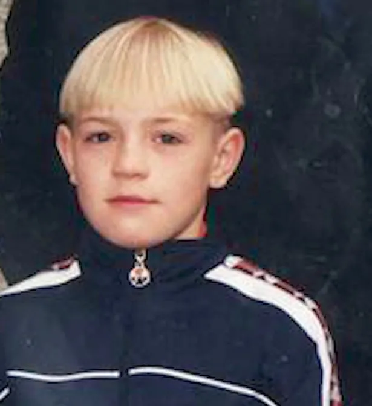

I make my own history
Conor McGregor was born in Dublin, Ireland, in 1988. His childhood was not easy. His family did not have much money, so everyone had to work
hard and show strong commitment. As a boy, Conor sometimes helped at home by doing chores like sweeping the floor, mopping the floor, doing
the laundry, and taking out the trash. His parents taught him that children should respect their family and help with responsibilities at home.
Before becoming famous, Conor worked as a plumber. Every morning, he had to wake up very early and travel long distances to work. The job
was exhausting. After work, he still went to the gym because he believed he must follow his dream of becoming a fighter. Many people warned
him that UFC was too dangerous and that he should choose a safer career. Some even forbade him from wasting time on fighting, but Conor refused to give up.
Life was difficult at that time. He and his girlfriend often struggled financially. Sometimes they barely had enough money to pay bills. Conor understood
that success must come from discipline and hard work. While other people relaxed after work, he trained for hours. He knew he had to stay focused.
Eventually, Conor McGregor became one of the biggest stars in UFC history. He won championship belts in two weight divisions and became famous
around the world. His story shows that people should never stop believing in themselves. If someone wants to achieve great success, they must
work hard and have to overcome many difficulties along the way.